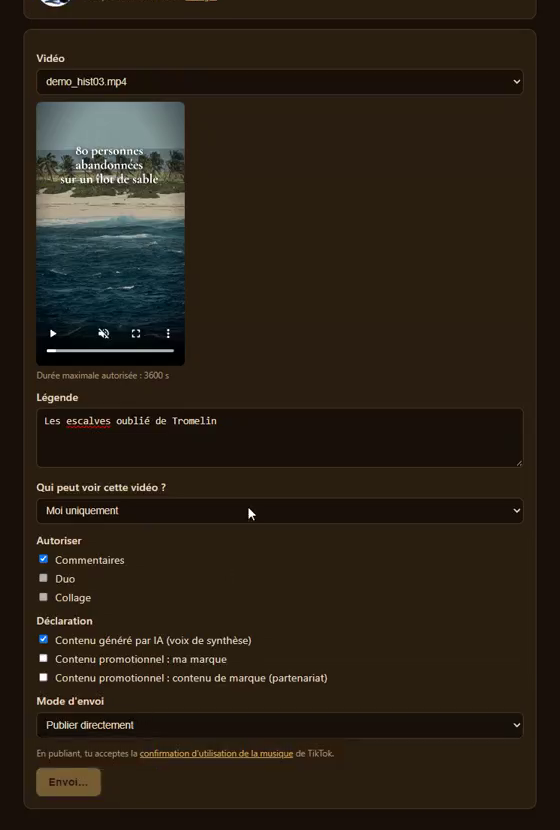

Publish your short history videos, from your desktop
Histoire is a desktop app for publishing short history videos. Sign in with your TikTok account, preview the finished video, write the caption, choose who can see it, and publish. The same app also posts to Instagram Reels and YouTube Shorts.
Features
Sign in with TikTok
Sign-in uses TikTok Login Kit. The app shows the avatar and name of the connected account, and you can switch account at any time.
Preview before you post
Pick a finished video from your computer and watch it inside the app before anything is sent.
You decide every setting
Caption, audience, comments, Duet and Stitch are chosen by you for each video. Nothing is pre-selected on your behalf.
Content disclosure
Declare AI-generated content, your own brand, or branded content, with the matching TikTok labels.
Direct post or draft
Publish straight to your profile, or send the video to your TikTok inbox and finish the post in the TikTok app.
Local by design
The app runs on your computer. Sign-in tokens stay in local files and no data goes to any server other than the platform's.
How it works
Connect your account
Click “Continue with TikTok” and approve the access request on TikTok's own page.Choose a video
Select the finished video and check it in the built-in player.Write the caption and set the options
Choose who can see the video, allow or block comments, Duet and Stitch, and tick the disclosure boxes that apply.Publish
The app uploads the video with the Content Posting API and shows the result once TikTok has processed it.

How Histoire uses TikTok
| Product / scope | What the app does with it |
|---|---|
Login Kit · user.info.basic | Shows the avatar and display name of the connected account, so you know where the video will be posted. |
Content Posting API · video.publish | Publishes the video you selected to your profile, with the caption and settings you chose. |
Content Posting API · video.upload | Sends the video to your TikTok inbox as a draft, when you choose that mode. |
The app never posts without an explicit click on the publish button, and it does not read your videos, followers or messages.
FAQ
What kind of videos is it for?
Short vertical history videos: animated maps, public-domain paintings and photographs, narration and word-by-word captions.
Where is my data stored?
On your computer only. See the Privacy Policy.
How do I disconnect?
Use “change” next to the account name, or remove Histoire in TikTok under Settings and privacy, Security, Apps and services. See Data deletion.
How can I contact you?
Write to teerificlothes@gmail.com.